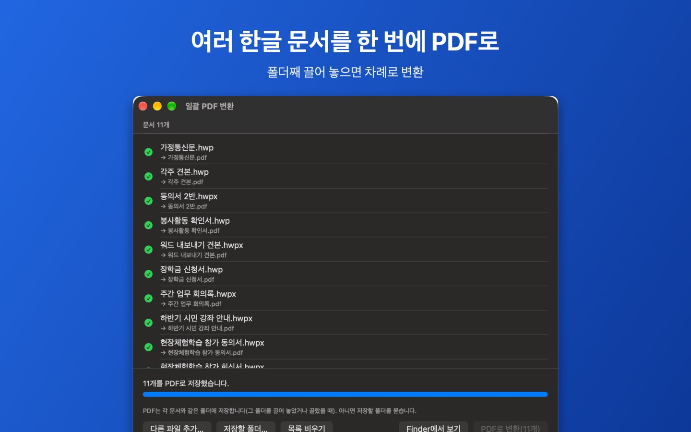

맥에서 한글 파일 여러 개를 한 번에 PDF로
HWP 뷰어를 만드는 개발자 ongsim이 직접 쓴 안내입니다.
이럴 때 씁니다
- 메일로 받은 한글 첨부파일 여러 개를 한컴오피스가 없는 사람에게 PDF로 보내야 할 때
- 공문·신청서 폴더를 통째로 PDF로 보관하고 싶을 때
- 하나씩 열어 ‘PDF로 내보내기’를 반복하기 번거로울 때
Mac용 HWP 뷰어 1.0.9 이상, macOS 15 이상. 한 번에 1개씩은 무료이고, 여러 개를 한꺼번에 바꾸려면 평생 이용권(구독 아님)이 필요합니다. 같은 Apple 계정이면 iPhone·iPad에서 산 이용권도 Mac에서 쓸 수 있습니다(‘구입 복원’).
순서
- HWP 뷰어를 열고 메뉴 막대의 ‘파일 › 일괄 PDF 변환…’을 누릅니다(단축키 ⌥⌘P).
- 열린 창에 .hwp, .hwpx 문서나 문서가 든 폴더를 Finder에서 끌어 놓습니다. ‘다른 파일 추가…’로 골라도 됩니다.
- ‘PDF로 변환’을 누르면 목록 위에서부터 차례로 바꿉니다. 다 끝나면 ‘Finder에서 보기’로 결과를 엽니다.

알아 두면 좋은 것
- 저장 위치: 폴더를 끌어 놓았거나 골랐다면 PDF는 각 문서와 같은 폴더에 저장됩니다. 아니면 ‘저장할 폴더…’로 정한 곳에 저장합니다.
- 덮어쓰지 않음: 같은 이름의 PDF가 이미 있으면 기존 파일을 지우지 않습니다.
- 못 연 문서: 암호가 걸린 문서처럼 열 수 없는 문서는 목록에 이유를 보여 주고, 나머지는 계속 변환합니다.
- 모양: PDF는 앱에서 보이는 쪽 모양 그대로 만들어집니다. 글꼴 차이로 줄 바꿈이 조금 다를 수 있으니 중요한 문서는 열어서 확인하세요.
Mac 1.0.9에서 함께 생긴 것
- 찾아 바꾸기(⌥⌘F): 글자 고치기에서 문서 곳곳의 같은 글자를 한 번에 바꿉니다. 고치는 방법은 한글 문서 글자 고치기를 보세요(Mac은 도구 막대의 ‘글자 고치기’).
- 이어서 하기: 쓰던 양식과 고친 글자가 Mac에 자동 보관되어, 앱이 닫혀도 같은 문서를 다시 열면 이어서 할 수 있습니다(이 Mac에만, 30일 뒤 자동 삭제).
- 워드(DOCX)로 내보내기(⇧⌘E): Pages·Word에서 고칠 수 있는 파일로 바꿉니다.
Mac에서 열기·Finder 미리보기는 아이패드·맥에서 한글 파일 열기, 한 문서씩 PDF로 저장·인쇄하는 방법은 한글 파일을 PDF로 바꾸기를 보세요.
자주 묻는 질문
한컴오피스가 없어도 되나요?
됩니다. HWP 뷰어가 한글 문서를 직접 읽어 PDF로 만듭니다.
문서가 서버로 올라가나요?
아닙니다. 모든 변환은 Mac 안에서 합니다. 광고와 구독도 없습니다.
아이폰에서도 여러 개를 한 번에 바꿀 수 있나요?
일괄 변환은 지금 Mac 버전에만 있습니다. 아이폰·아이패드에서는 문서마다 ‘더 보기 › PDF로 저장·공유’를 씁니다(무료).